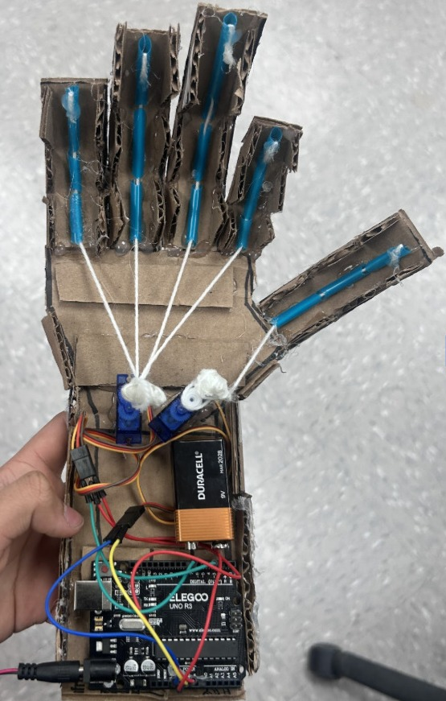
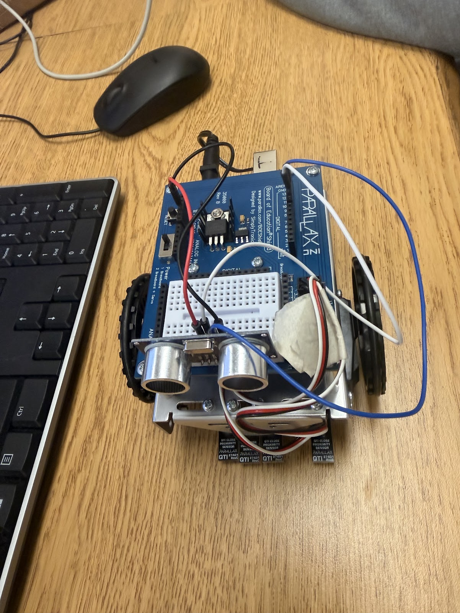
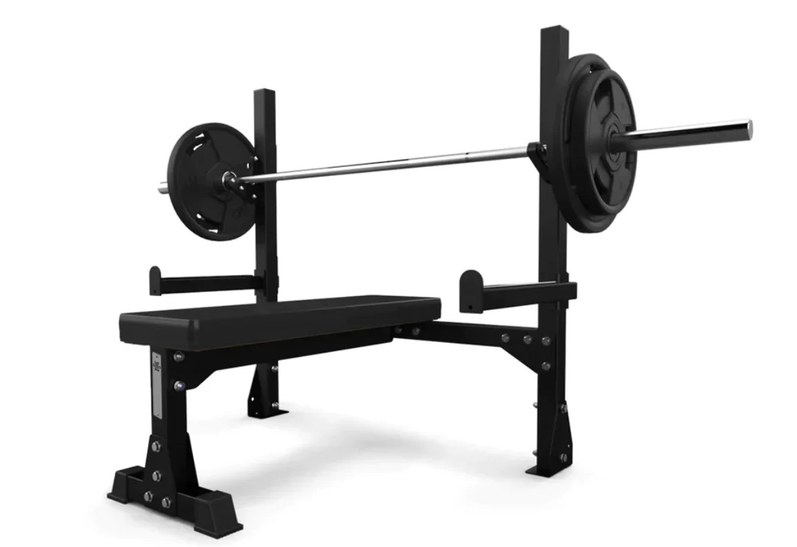

Projects I built in the Computer and Information Sciences program.
A robotic hand made from cardboard with string tendons, controlled by an Arduino. Each finger is pulled by a servo motor through a string, copying how human tendons work.

I wanted to build something that connects code to real movement. By copying the tendon structure of a human hand in cardboard, I could see how software running on a microcontroller turns into physical motion.
The hardest part was calibrating the servo values so the fingers moved smoothly without ripping the cardboard joints. Getting the string tension right took a lot of testing, and I had to adjust the code and the build at the same time.
A wheeled robot programmed to drive through an obstacle course on its own. It uses servo motors to move and an ultrasonic sensor to stop when it gets close to an object.

The robot had to finish a course by itself with no remote control. It follows a set path of turns and forward moves, then stops automatically when the ultrasonic sensor sees something within 6 inches.
Getting accurate 90-degree turns was tricky because the wheels slipped on the floor. I had to keep testing and adjusting the turn timing. The distance sensor math also needed tuning so the readings matched real life. In the future, I'd like to improve the sensor accuracy and make the turns more precise through testing and servo calibration.
A command-line Python program that logs my workouts and saves them to a text file. It can show past workouts and add up the total training volume.

I wanted a simple tool to track my own workout progress. Instead of a database, it saves everything to a plain text file, which helped me practice reading and writing files. It also adds up sets, reps, and weight to show total training volume.
At first, the program crashed whenever a line in the text file was messed up. I added a check that skips bad lines, and I used try/except so the program doesn't crash if someone types letters instead of numbers. If I eas to do this again I would like to add a set of predefined list of workouts to make it easier to select from.
A Python program that turns a photo into pixel art, drawn dot by dot using the Turtle library. It reads the brightness of each pixel and picks one of eight shades of gray.
This project connects image processing and drawing. The program uses Pillow to read how bright each pixel is, then uses Turtle to place a colored dot for it, rebuilding the image out of gray dots.
The main challenge while making the project was the amount of time it took to draw the image, as turtle draws one dot at a time. I turned off the screen tracer feature and only updated once at the end making the code faster. Picking the right brightness levels for each gray shade also took some trial and error as I had to manually match everything.
An interactive 3D terrain that is generated with Perlin noise. You can rotate the terrain and change it while it's running.
The goal was to see how noise functions can make the terrain natural. Instead of random points, Perlin noise makes smooth, continuous hills like you see in games like Minecraft.
Mapping a 2D noise field onto a 3D mesh in real time without lagging was tough. I limited the grid size and moved the noise seed each frame to animate it.
An animated cactus that sways like it is in the wind, made for an ecosystem project using sine and cosine.
The assignment was to design a living thing that behaves believably in a shared environment. The cactus needed to look rooted but still react to wind without using any animation libraries.
Making the sway look natural instead of robotic was the main challenge. I added phase offsets and changed the amount of sway per branch so it looked more organic.
Colorful bubbles that float upward and react to the mouse and keyboard. A simple particle system.
This project shows how many simple objects following the same rules can create something interesting. Each bubble has its own speed, size, and color.
I had to spawn new bubbles and remove off-screen ones so the program didn't slow down over time. Using the HSB color model let the colors shift smoothly.
A rainfall simulation where each raindrop falls with gravity and wind, made only with code and no images.
The goal was to make rain using only code. Each drop is a physics object that falls with gravity and drifts with wind.
Drawing hundreds of drops without lag was hard. I reused raindrop objects instead of making new ones each frame, and drew each drop as a line based on its speed to get the streaky look.
A program that displays the use of perlin noise in a black and white format.
This sketch generates a wave that flows and morphs on its own. Instead of using random numbers, each point's height is generated by Perlin noise, making the motion smooth and natural rather than jittery.
Getting the motion to look organic was the main challenge. If the speed were too high, it would look static, and too slow would look flat.